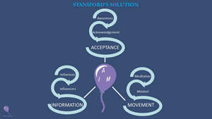

Trade Mark Journal No.2025/018 2 May 2025
UK00004190231 16 April 2025 (41)

- Class 41
- Life coaching (training); Training or education services in the field of life coaching; Coaching; Career counselling and coaching; Personal coaching [training]; Coaching [training]; Sports coaching; Coaching services; Teaching of life saving techniques; Coaching in economic and management matters; Sports coaching services; Educational services in the nature of coaching; Political speech training and coaching; Coaching in the field of sports; Career counseling [education]; Career counselling relating to education and training; Political debate training and coaching; Esports coaching; Coaching relating to finance; Career counselling [training and education advice]; Sports tuition, coaching and instruction; Computerised training in career counselling; Personal development training; Career and vocational counselling; Career and vocational training; Coaching services for sporting activities; Teaching of diet education; Education and training in the field of business management; Education and training services in relation to real estate management; Education, teaching and training; Personal fitness training services; Health club services [health and fitness training]; Training in the field of real estate management; Career advisory services (education or training advice); Personal trainer services [fitness training]; Medical training and teaching; Education and training services in relation to business management; Health and wellness training; Provision of training courses for young people in preparation for careers; Health and fitness training; Training in philosophy; Teaching of beauty skills; Training in business skills; Business training; Education academy services for teaching acting; Training in the field of business management; Business mentoring services; Training in business management; Consultancy relating to physical fitness training; Arranging and conducting of youth American football training programs; Education services relating to business training; Training for parents in parenting skills; Meditation training; Academic mentoring of school age children; Teaching of meditation practices; Team building (education); Provision of training courses in personal development; Teaching academy services; Teacher training services; Personal training services; Teaching and training in business, industry and information technology; Physical fitness education services; Provision of training courses for young people in preparation for employment; Health and fitness club services; Educational and training services relating to sport; Personal development courses; Education and training; Training services relating to fitness; Business training services; Education and training in the field of occupational health and safety; Training consultancy; Arrangement of training courses in teaching institutes; Arranging professional workshop and training courses; Education and training consultancy; Consultancy relating to vocational skills training; Management training consultancy services; Providing training courses on business management; Training and further training consultancy; Training of teachers; Employment training; Providing of training, teaching and tuition; Organisation of training courses; Consultancy services relating to the education and training of management and of personnel; Staff training services; Training services relating to management consultancy; Courses (Training -) relating to management; Management training services; Education services for managerial staff; Educational and teaching services; Conducting of educational courses in business management; Linguistic education and training services; Conducting educational workshops in the field of business; Conducting of educational courses in business; Educational and training services; Career information and advisory services (educational and training advice); Conducting of instructional, educational and training courses for young people and adults; Vocational education and training services; Courses for the development of consulting skills; Training and education services; Education and training services; Organisation of continuing educational seminars; Guidance (Vocational -) [education or training advice]; Vocational guidance [education or training advice]; Vocational skills training; Vocational training; Education services relating to meditation; Training; Conducting workshops [training]; Self-awareness courses [instruction]; Arranging and conducting of workshops and seminars in self-awareness; Perceptual teaching services; Conducting training seminars for clients; Training in communication techniques; Organisation of training seminars; Teaching; Training services relating to the therapy of primary cause analysis by hypnosis; Conducting workshops and seminars in self awareness; Conducting training seminars; Conducting workshops and seminars in personal awareness; Workshops (Arranging and conducting of -) [training]; Arranging and conducting of workshops [training]; Arranging and conducting of training workshops.
Andrew Phillip Staniford